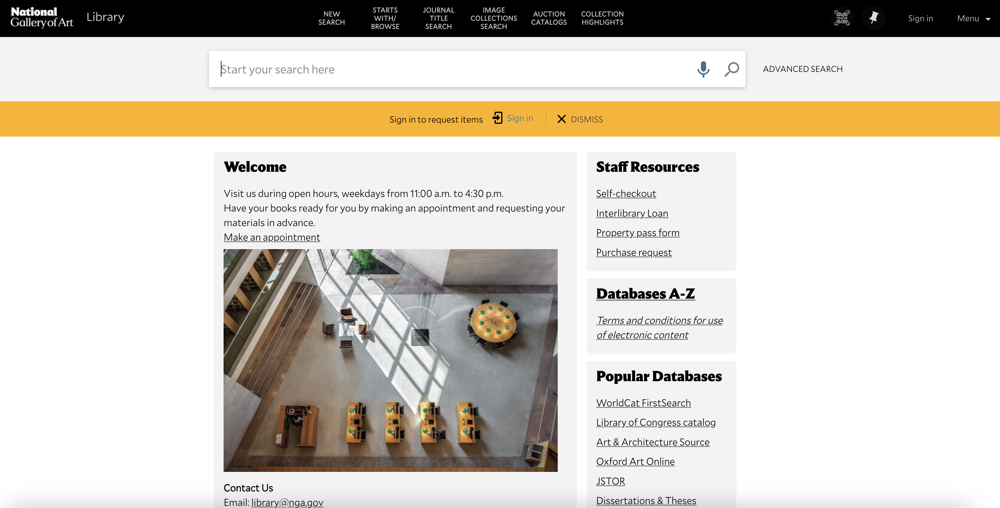
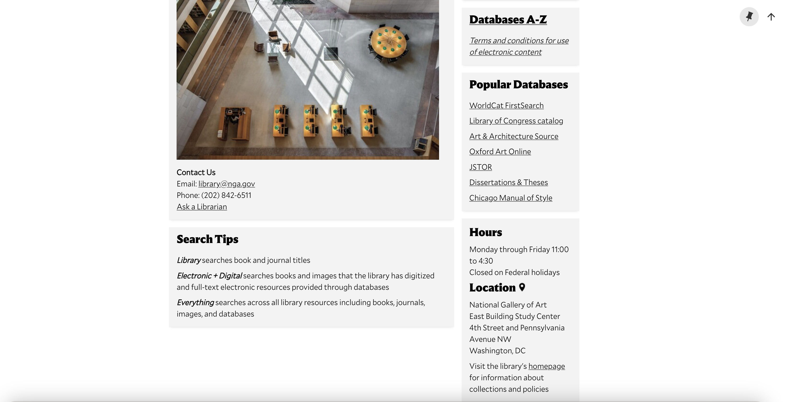
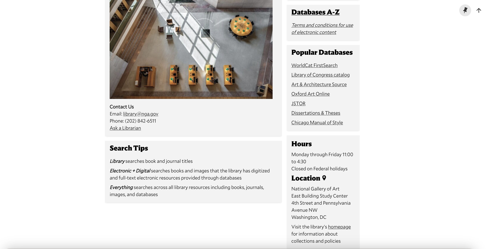

In what follows, we undertake a system analysis and usability study of the National Gallery of Art Library search system, drawing throughout on the Nielsen heuristics. The body of our report consists of five main parts:
In the final section of the report, we review the results of the our system analysis through a summary presentation of those results according to Nielsen's heuristics, and we then advance recommendations for changes to the National Gallery of Art Library search system.
In this section of the report, we analyze the NGA Library's search system, focusing on basic and advanced searches, and highlight issues that we think merit further consideration.
Our starting point is the library's main search page.
Our focus is on the 'simple' and 'advanced' search functions. However, before we turn to those search functions, we wish to note that there are three main options for searches: searches can either be limited to the library, to electronic and digital resources, or to everything. However, these options are explained only, as it were, below the fold on the search page, so they are not immediately apparent. The first screenshot below shows the search options; the second shows where those options are explained.
 

We now turn to the advanced search function. It is implicitly set up for Boolean searching, although it is left to the user to infer that from the structure of the search box. Here again, Nielsen heuristics #4 and #6 seem to be violated.
It's worth contrasting the minimal information on offer in the NGA search page with the CUA library catalog, which, like the NGA catalog, uses the Primo Ex Libris VE system. The CUA catalog offers explanations both of what the searchbox is and how it works, as well as search tips that go beyond Boolean functions. (The two screenshots that follow illustrate each point in turn.)
This contrast brings us to what we take to be one of the deepest problems with the NGA Library search system: it provides next to no help and documentation (Nielsen heuristic #10), so the user is left to infer how to use the system. While one might object that this is not a problem, given that the intended users of the NGA Library search system are curators and scholars, this assumption, is, we think, misplaced. As Bates (2017) observes: "As a rule, people—including Ph.D. scholars—develop what search skills they have incidentally to their primary efforts at research or problem-solving and often fail to develop a conscious repertoire of search skills and techniques to help them over difficult stages.” It should therefore not be assumed that the intended users of the NGA Library search system havedeveloped these skills (p. 2080).
We begin by summarizing the results of the analysis of the NGA Library search system undertaken from the standpoint of Nielsen's heuristics.
| Heuristic | Analysis |
|---|---|
| Visibility of System Status | |
| Match Between System and the Real World | |
| User Control and Freedom | |
| Consistency and Standards | |
| Error Prevention | |
| Recognition Rather than Recall | |
| Flexibility and Efficiency of Use | |
| Aesthetic and Minimalist Design | |
| Help Users Recognize, Diagnose, and Recover from Errors | |
| General documentation |
We now propose our recommendations for changes to the NGA Library search system.